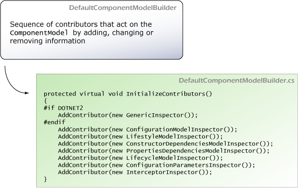

ComponentModelBuilder and Contributors
Each component registered on the kernel has an associated ComponentModel. This model stores all collected information from the component to be used during its lifetime on the kernel. Initially the model is will mostly blank. The model is created by the ComponentModelBuilder.
The ComponentModelBuilder then executes a series of "contributors" registered on it that look for an specific information about the component and takes proper action, usually changing or adding information on the ComponentModel instance.

Those "contributors" are simple classes that implement the IContributeComponentModelConstruction interface. The following are the contributors used by default. They are executed in order.
- GenericInspector: Checks if the component requires generic arguments
- ConfigurationModelInspector: Uses the Kernel's ConfigurationStore to obtain the configuration for the component (if available)
- LifestyleModelInspector: Inspects the component and the configuration for a lifestyle to be used for the component
- ConstructorDependenciesModelInspector: Collects all public constructors and the dependencies required by each of them
- PropertiesDependenciesModelInspector: Collects all public writable properties
- LifecycleModelInspector: Check for interfaces that defines that the component is interested in lifecycle calls. For example, IDisposable
- ConfigurationParametersInspector: Looks for a parameters node on the configuration associated with the component and fill a ParameterModelCollection for the component
- InterceptorInspector: Checks whether the component has interceptors associated with it
We strongly suggest that you browse the code for each contributor. They are really simple and show how concerns are really separated on the MicroKernel design. You can easy implement new contributors to augment the MicroKernel functionality.
You should also consult the following documents:
- ComponentModel API document
- IComponentModelBuilder API document
- IContributeComponentModelConstruction API document
Generated by Castle Anakia.
Sponsored by  Castle Stronghold.
Castle Stronghold.